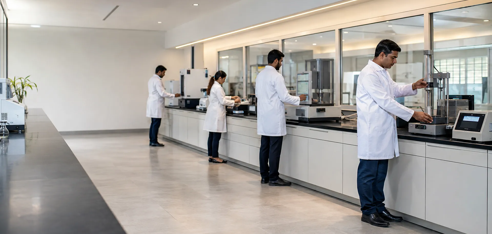
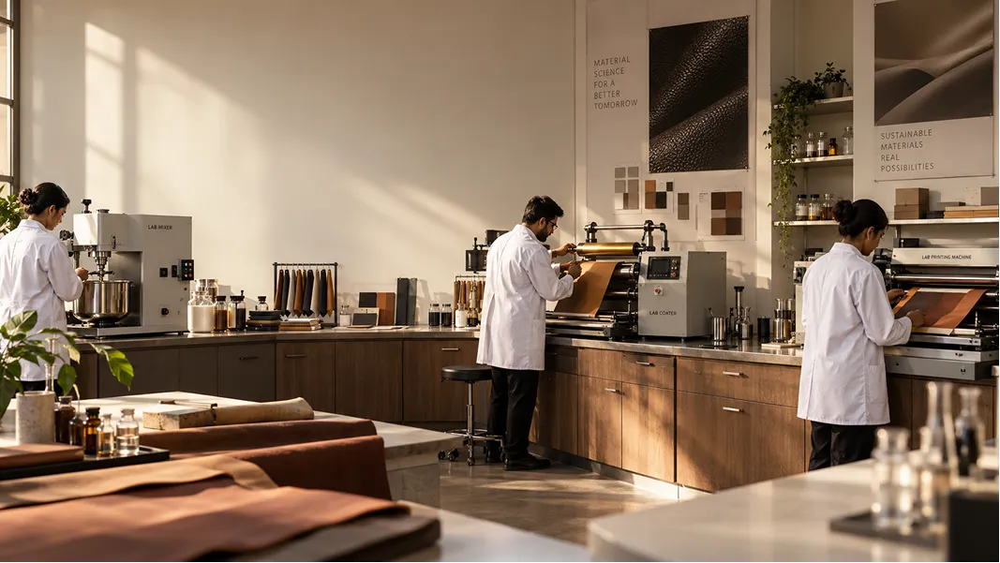
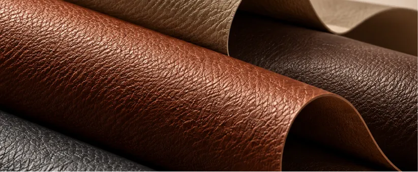
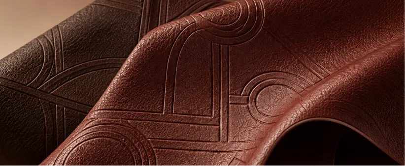
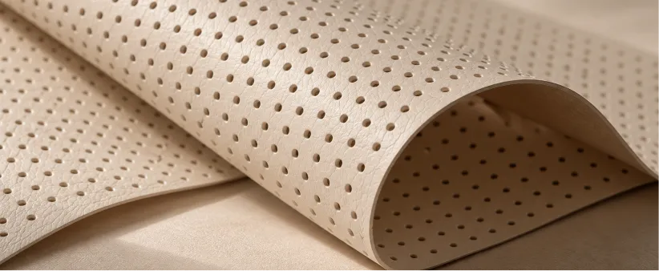
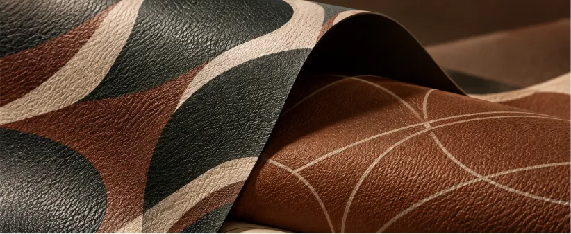

Products
Research. Develop. Refine.
Our in-house R&D capabilities support material development from initial customer requirements through prototyping, testing and validation.
With dedicated R&D laboratories at Jaitpura and Dhodhsar, we work to develop solutions across performance, appearance and application requirements.

From Brief to Production
Development Process
-
01
RFQ & Feasibility
Understanding the requirement and assessing development feasibility.
-
02
Swatch & Prototype
Developing initial material swatches and prototypes.
-
03
Lab Validation
Testing and validating the developed material.
-
04
PPAP Submission
Submitting the material for the required approval process.
-
05
Production
Moving the approved development into production.
Anatomy
Our Material
Understanding What Goes Into Every Layer
- 01Skin
- 02Foam
- 03Adhesive
- 04Fabric
Trend & Surface
Design Lab
Our Design Lab brings together trend intelligence, colour and surface development to respond to evolving design and customer requirements.
Mayur uses WGSN for global trend forecasting and Coloro for colour intelligence and matching.
-

Paper Grains -

Embossing -

Perforation -

Prints
Assurance
Quality Assurance Process
Mayur follows a defined quality assurance process across raw materials, production and finished material.
-
01
Incoming Inspection
Raw materials are tested and verified before use.
-
02
Online Inspection
Initial production output is checked for colour, feel, weight, thickness, finish and other required parameters.
-
03
In-Process Inspection
Key production parameters are monitored and controlled throughout manufacturing.
-
04
Final Inspection
Finished material undergoes physical and visual inspection before dispatch.
-
05
Calibration & Audits
Measuring instruments are calibrated & processes are supported by regular internal audits.
100% visual inspection of material before dispatch.